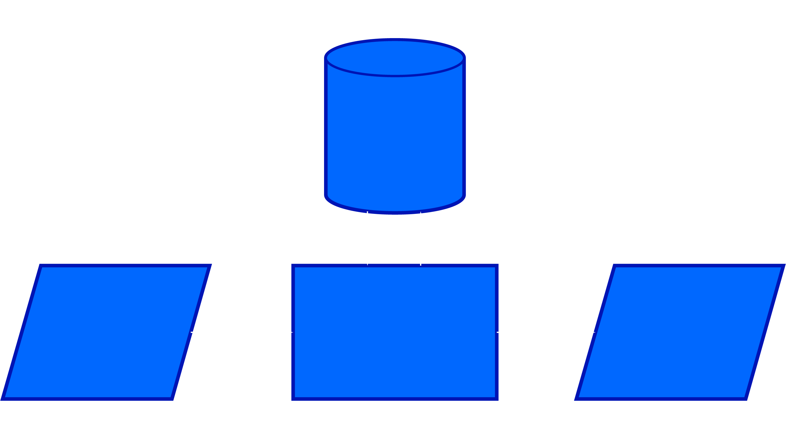

Chapter 1: Computing Infrastructure Components
- Servers
- Clients
- LAN
- Internet Connectivity
- Software
- Storage
- Backup
- Security
1. Computer Model

- Input: keyboard, mouse, scanner, punch cards
- Processing: CPU executes the computer program
- Output: monitor, printer, fax machine
- Storage: hard drive, optical media, diskettes, magnetic tape
2. Computer Components:
- CPU
- Motherboard
- Memory
- Hard Disk
- Display
- Keyboard
- Mouse
- Power Supply
- Network Interface
- CPU (Central Processing Unit)
- Consists of three parts: Control Unit, Arithmetic Logic Unit, Registers
- CPU speed is influenced by several factors: Clock Speed, word size, cache, instruction set size
- There are Singlecore and Multicore
- Desktop Processor: Intel (Pentium) Core 2 Duo/Quad, AMD Athlon (Dual/Quad Core)
- Mobile Processor: Intel (Centrino 2) Core 2 Duo, AMD Turion (Dual Core)
- Server Processor: Intel Xeon Quad Core, AMD Opteron Quad Core, RISC (Reduced Instruction Set Computer): IBM Power PC, SUN SPARC ...
- Atom Processor
- Memory
- Computer memory is the storage space in the computer, where data is to be processed and instructions required for processing are stored.
- There are ROM, CMOS RAM, Cache, RAM
- Hard Disk
- Magnetic storage device. It stores data by magnetizing particles on a disk.
- It is used to store operating systems, application software, utilities and data.
- Product Detail:
- Metal, plastic, or glass platters
- 2 magnetic surfaces/platter
- 1 or more platters per spindle
- 3,600 – 15,000 rpm
- 1 head/platter
- Head(s) move in and out
- Motherboard
- The motherboard serves as a single platform to connect all of the parts of a computer together. It connects the CPU, memory, hard drives, optical drives, video card, sound card, and other ports and expansion cards directly or via cables.
- CD/DVD Drive
- CD (Compact Disk)
- Optical storage device. Data is read from the CD by a laser.
- Stores data as light and dark spots on the disk surface.
- They have an unlimited life-span.
- RO & RW CDs
- I/O Rate is Nx where 1x is 150KB/s, Read & Write speeds are not same, upto 52x speeds available
- DVD (Digital Video Disk)
- 4.7 GB
- RO & RW DVDs
- I/O Rate is Nx where 1x is 1.35MB/s, Read & Write speeds are not same, upto 20x speeds available
- Blu Ray
- Up to 50 GB
- User Blue Laser
- Adaptors (Expansion Cards)
- It is a printed circuit board that can be inserted into an electrical connector, or expansion slot, on a computer motherboard, backplane or riser card to add functionality to a computer system via the expansion bus.
- Power Supply
- A power supply unit (PSU) converts mains AC to low-voltage regulated DC power for the internal components of a computer.
- Display
- A display is a computer output surface and projecting mechanism that shows text and often graphic images to the computer user, using a cathode ray tube ( CRT ), liquid crystal display ( LCD ), light-emitting diode, gas plasma, or other image projection technology.
- Keyboard
- It is an input device that allows a person to enter letters, numbers, and other symbols (these are called characters in a keyboard) into a computer.
- Mouse
- It is a handheld hardware input device that controls a cursor in a GUI (graphical user interface) and can move and select text, icons, files, and folders on your computer.
- There are 3 kinds: Mechanical, Optical, IntelliMouse
- Network Interface
- A network interface is the point of interconnection between a computer and a private or public network.
- I/O Ports
- It is a socket on a computer that a cable is plugged into. The port connects the CPU to a peripheral device via a hardware interface or to the network via a network interface. See port, standards - hardware interfaces, DisplayPort, HDMI and USB.
- Printer
- There are LaserJet (Mono & Colour), Inkjet, Dot Matrix, Line
3. Software Component
- Applications
- Operating System
- An Operating System (OS)
is an interface between a computer user and computer hardware. An operating system
is a software which performs all the basic tasks like file management, memory
management, process management, handling input and output, and controlling
peripheral devices such as disk drives and printers.
EX: Windows, MacOS
- Application Software
is a computer program designed to help people perform an activity.
4. Computers: Clients and Servers
- In a client/server network arrangement, network services are located in a dedicated computer whose only function is to respond to the requests of clients.
- The server contains the file, print, application, security, and other services in a central computer that is continuously available to respond to client requests.
- Servers
- Desktop Server
- Dual Processor Server
- Quad Processor or higher SMP Server
- Parallel Cluster using Dual/Quad Processor (Dual/Quad Core) servers clustered up to several Hundred Processors
- Workstation
- A workstation is a special computer designed for technical or scientific applications. Intended primarily to be used by one person at a time, they are commonly connected to a local area network and run multi-user operating systems.
- Clients
- It is a piece of computer hardware or software that accesses a service made available by a server as part of the client–server model of computer networks. The server is often (but not always) on another computer system, in which case the client accesses the service by way of a network.